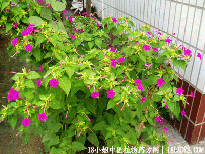

(本文解释权归中药材天地网兄弟站-18小姐中医植物药方网所有,如需转载请注明出处)
入地老鼠(中药材植物名:紫茉莉)(植物科目:紫茉莉科)

别名：胭脂花头，水粉花头。
植物名：紫茉莉。
生长环境：本品为多年生宜立草本。为常见公园花卉，极粗生。
分布：原产美洲热带地区广州附近普遍栽培。
入药部分：块根。
采集期：全年。
自采地点：家种。
性味：性凉，味甘淡。
功能：解毒、除痰火，利尿。
主治、用量和用法：1、痰火颈疠：生用1至2两，或干用5钱至1两、猪瘦肉适量、煎服；2、五淋：用法同上；3、花柳白浊；用法同上。
（方歌）入地老鼠性至灸，功能善窜噬毒称，颈疠五淋兼白浊，瘦肉同煲效非轻。
参考资料：》中国药用植物图鉴》本品含有大量淀粉。鲜根治妇女血崩、白带、白浊；外治乳痈、疔疮、骨折，鲜叶可治疥疮；种子淀粉可治雀斑。又用治糖尿病。
(本文解释权归中药材天地网兄弟站-18小姐中医植物药方网所有,如需转载请注明出处)